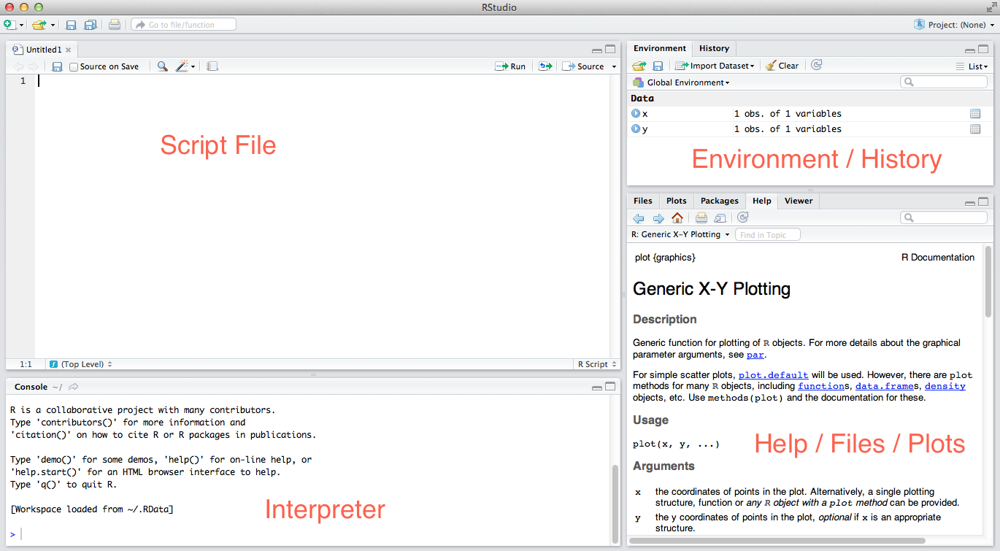

We will be relying heavily on a piece of software called Rstudio. There are a ton of reasons to use Rstudio. It includes a lot of time-saving features! There are four main sections of the screen:
script - This is where you DO what you want to do. This is just a regular plain text file with the .R file extension. Scripting is THE REASON to use R. It provides an exact record of what you did, so that you can recreate each step of the analysis exactly.
Never do something important only in the interpreter: do it in the script, save it, and then send it to the interpreter!
?plot.environment/history - This shows the current variables in memory, and a history of commands executed in the interpreter. Don’t mistake the history for something like a record of your analysis…this will include every command executed, including the mistakes.

I would highly recommend using the “Projects” feature of Rstudio. This isolates all your files related to a particular projet in a single directory, and it also takes care of setting your working directory: this means you can often avoid typing /Users/wabarr/Projects/myProject/datafile.txt and instead just type datafile.txt. You can start a project using the RStudio menu (File > New Project).
This feature is incredible. Instead of creating regular .R script files, you can create a special type of script file called an R markdown file, which allows you to mix human readable text with snippets of R code. At any point you can “knit” the R Markdown file, which causes the code snippets to be run. Any results (figures or text output) get combined with the human readable parts, and combined into a single pdf, word doc, or html file. This is how I work mostly….basically writing the methods section of a paper interactively as I write the analysis code. This website is written entirely in Rmarkdown.
This sentence is just normal text, made for humans to read. The following bit is a “code chunk”, which is set off by the ``` characters and consists of actual R code that gets run, and the results knitted back into the document. You can also put R code inline like this. What is 2 + 2? The answer is `r 2 + 2`.
```{r examplechunk}
x <- rnorm(100)
y <- (x * 0.3) + rnorm(100, sd=0.2)
plot(x,y,pch=16)
```
Here is some more human readable text right after the code chunk.
This sentence is just normal text, made for humans to read. The following bit is a “code chunk”, which is set off by the ``` characters and consists of actual R code that gets run, and the results knitted back into the document. You can also put R code inline like this. What is 2 + 2? The answer is 4.
Here is some more human readable text right after the code chunk.